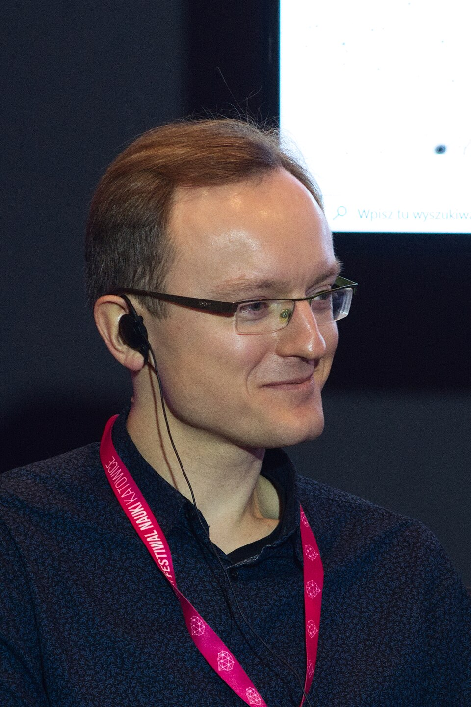

„Niepojęta” matematyczność świata
Wykład otwarty dr. Tomasza Millera
Wykład otwarty dr. Tomasza Millera
Współczesna fizyka jest na wskroś zmatematyzowaną nauką. Choć już Galileusz pisał, że „księga przyrody napisana jest językiem matematyki”, to dla dzisiejszej fizyki matematyka jest czymś więcej niż tylko językiem – to często klucz do zaskakujących odkryć.
Jak to się stało, że od pitagorejskich proporcji, euklidesowej geometrii i ptolemejskich epicykli doszliśmy do zakrzywionej czasoprzestrzeni i pól kwantowych? Dlaczego przyroda daje się aż tak dobrze modelować abstrakcyjnymi „krzaczkami” wymyślanymi przez matematyków często w zupełnie innych celach?
Jak to możliwe, że równania bywają mądrzejsze od ich autorów, a nowe zjawiska fizyczne da się odkrywać „na papierze”? Czy można powiedzieć, że sam wszechświat jest w jakimś sensie „matematyczny”?
„aMFIteatr nauki” to cykl wykładów popularnonaukowych z nauk ścisłych. Jest to inicjatywa Rady Samorządu Studentów Wydziału Matematyki, Fizyki i Informatyki UG. Zrywamy ze stereotypem nudnych, akademickich monologów, tworząc przestrzeń, w której nauka spotyka się z popkulturą, technologią i odważnymi pytaniami. Zapraszamy osobowości, które potrafią porwać tłumy, inspirować młodych ludzi i mówić o skomplikowanych sprawach w fascynujący sposób.
Cykl otworzyliśmy z przytupem – naszym pierwszym gościem był prof. Andrzej Dragan. Jego wykład przyciągnął potężne tłumy; zapełniliśmy 2 aule i dodatkową salę z transmisją na żywo (razem ok. 400-450 osób). Po wykładzie odbyła się wciągająca sesja Q&A oraz spotkanie autorskie z podpisywaniem książek.
Nasza widownia to studenci nauk ścisłych, pasjonaci technologii, przyszli liderzy innowacji, a także zaangażowana publiczność ze Związku Uczelni Fahrenheita (w tym UG, PG, GUMed, ASP, AMuz). Projekt wspierany jest m.in. przez Wydział Matematyki, Fizyki i Informatyki UG, Centrum Aktywności Studenckiej i Doktoranckiej UG oraz Związek Uczelni Fahrenheita.

Fizyk matematyczny i popularyzator nauki, związany z Centrum Kopernika Badań Interdyscyplinarnych Uniwersytetu Jagiellońskiego. W swojej pracy naukowej i popularyzatorskiej zajmuje się m.in. na styku fizyki i matematyki, tłumacząc zawiłości mechaniki kwantowej oraz powody, dla których abstrakcyjna matematyka tak doskonale opisuje otaczającą nas rzeczywistość.